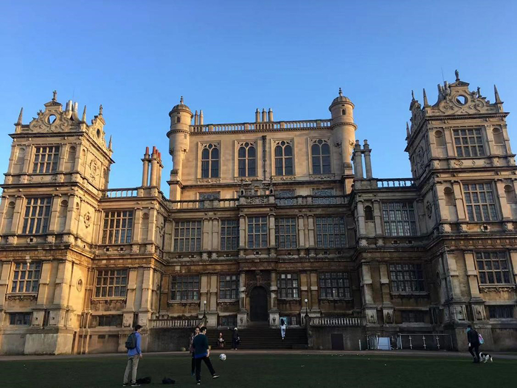
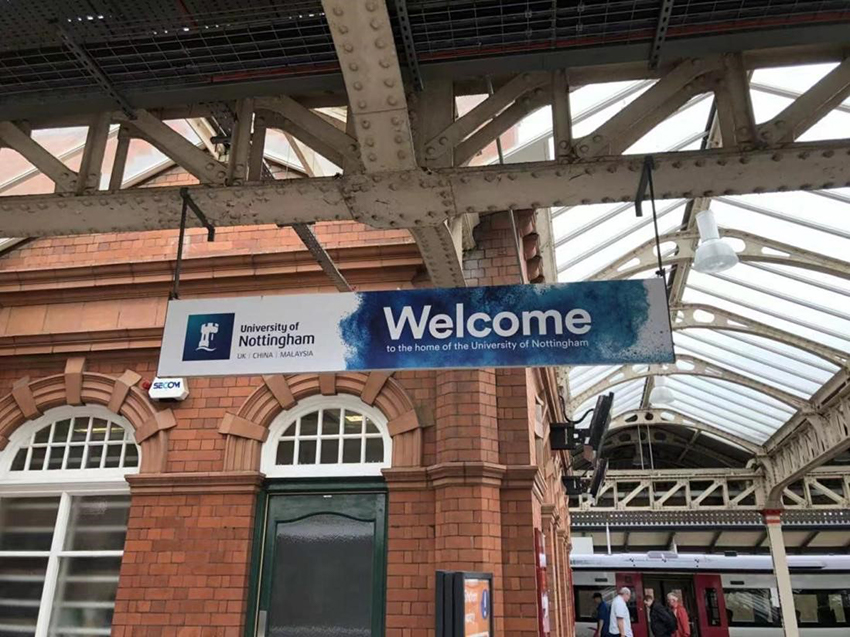
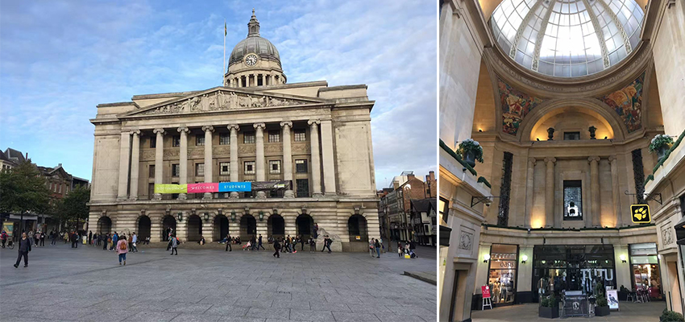
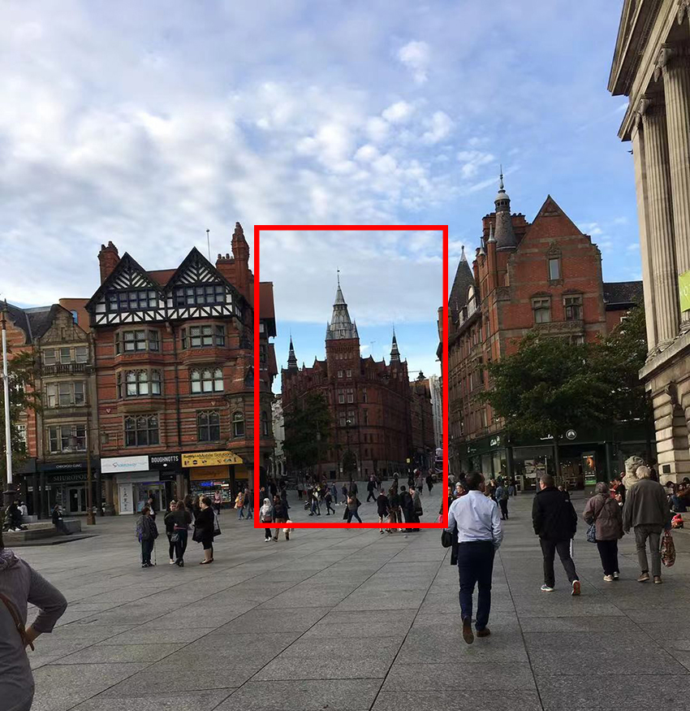
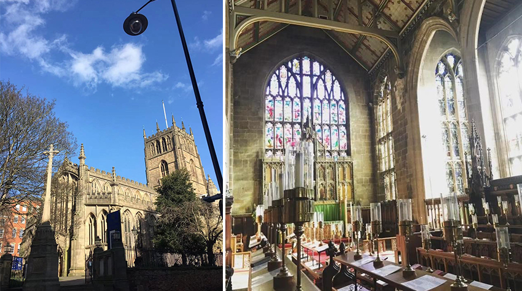
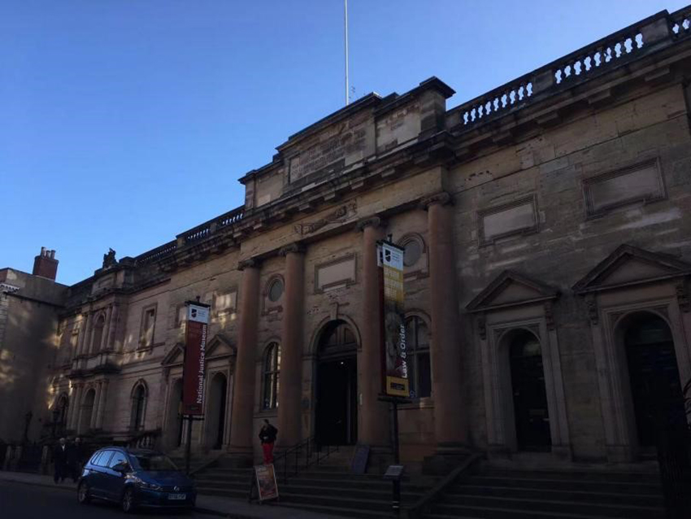
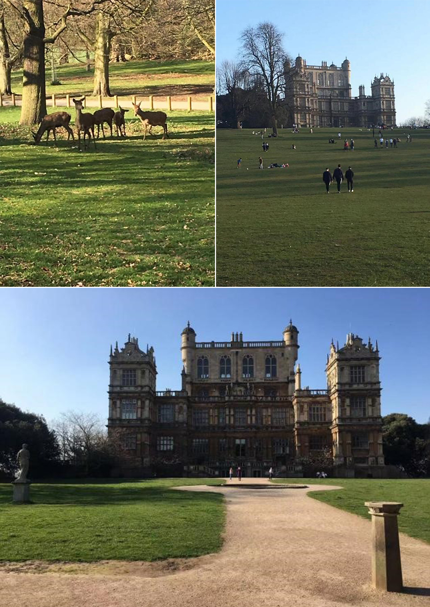
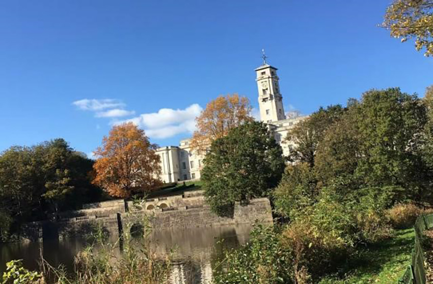
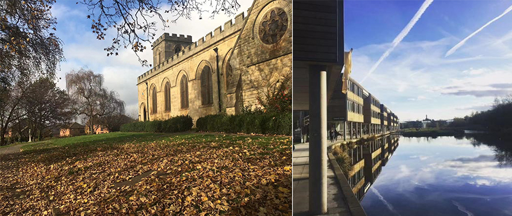

對於英國，大家的想像是什麼：Big Ben？只愛美人不愛江山的溫莎城堡？愛丁堡的Carlton Hill？還是聞名世界的天空之島？
這些曾經也是我對英國的想像，然而最終，我與英國的緣分，與一部21世紀最經典的電影牽扯上了：Nolan的黑暗騎士系列。
|  | ||
| ( 坐落於諾丁漢近郊的Wollaton Hall是黑暗騎士 Bruce Wayne的家 ) |
Nottingham，是英國中部的一個工業小城，也是我母校 University of Nottingham坐落之處。Nottingham在國內的知名度並不是很高，但是你一定聽過某位老兄的名字：羅賓漢；這位老兄當年劫富濟貧那片區域，就是在諾丁漢郡。
在英國，除了倫敦之外，你的學校離市中心都至少有15~30分鐘的車程，如果從台灣出發想要到Nottingham ( P.S 除了來上學，我建議你別這樣做，認識英國還是從倫敦開始，雖然倫敦物價實在是貴的離譜...)，建議先飛到Birmingham機場，出了海關後按照火車站的標示走，進站處就有自動售票機可以買火車票到Nottingham，上車後大約1小時就可以到Nottingham了。
|  | ||
| ( 諾丁漢火車站，一個工業革命留下來的老建築，十分有味道 ) |
Nottingham是一個小而美的城市，一般我們留學生會從公車站附近的Victoria Centre mall為起點，往Old market square走，附近有Boots的總店 (類似像屈臣氏的藥妝店)、英國國民品牌Clarks、Lush洗髮餅、The Body Shop品牌應有盡有，商圈的中心是一個類似像白宮一樣的議事廳，過去做為市政府使用，現在則變成一個小商場，外圍有一圈咖啡廳；再往外圍走一些，有亞洲超市，留學生基本上每周會去亞洲超市補貨，因為你絕對不會想去嘗試英國人的餐廳：又貴又難吃。因此來英國，如果要節省旅行不必要的花費，建議到Airbnb上找有廚房的房子。
|  | ||
| ( Nottingham最熱鬧的老廣場，聖誕節會有集市，各種市民活動都在這裡舉行) |
|  | ||
| ( 照片中框起來的部分是一間叫做Alchemist的酒吧，有種中世紀的魔幻風格 --- 煙霧與燈光，音樂也十分不錯，算是我推薦榜上排第二的酒吧。 ) |
||
市中心有幾個推薦去的景點，首先是St Mary Cathedral，這是一個不收費的大教堂，歐洲很多大教堂都會要收費，但實際上很多英國地方性的城鎮都有類似的景點是不收費的，裡面的神父與修女也都非常友善，有機會跟他們聊聊天，可以了解當地很多的故事。
|  | ||
| (St Mary Cathedral) | ||
推薦這個教堂的原因是傳說羅賓漢就是在St. Mary Cathedral被捕。而當時的法院與刑場就在這座教堂的對面，現在改為National Justice Museum，這也是另外一個值得推薦的黑暗觀光景點，在這裡你可以看到真實的英國古代監獄，以前所謂的地牢、水牢等，還有各種刑求的工具。此外由於這個博物館 (監獄) 過去真的是死了太多人，在當地也是一個非常有名的鬼屋，晚上博物館方還會組織遊客報名參加撞鬼活動，來到博物館各個傳說出現鬼魂的地方，跟你講恐怖故事，非常有趣。諾丁漢這一片區域帶有很多傳奇色彩：羅賓漢的故事、工業革命對這個城市的影響、詩人拜倫的浪漫、Paul Smith外部簡潔卻內襯風騷的服裝設計等，這也是這座城市的魅力，很多家喻戶曉的故事，過去你或許不知道，但你卻會發現這些故事與諾丁漢的聯繫，是千絲萬縷的。
|  | ||
| ( National Justice Museum，從外觀看就充滿壓抑 ) | ||
最後推薦市中心的一個景點是Oldest Inn，傳說這是英語世界最古老的酒吧，可以追朔自十字軍東征時代，這是一個非常熱鬧的酒吧，不僅僅是觀光客會來朝聖，當地的居民也會一起過來狂歡，並不是一個網紅景，如果你喜歡蘇格蘭那種粗曠，可以點一杯Lager；如果你是像我一樣只是去享受酒吧氛圍的，店裡面也有很多氣泡酒，其中Apple Cider是我最懷念的一種蘋果氣泡酒，推薦給大家。
從老廣場往Victoria Centre走，會看到有一排粉紅色的公車，搭上N34路線坐到Wollaton Hall，即可到達蝙蝠俠他家。這裡過去是一個貴族在維多莉亞時代留下來的莊園，保存得非常完好；這是因為當時的主人是以接待英國皇家的標準去蓋這幢房子，但諷刺的是目前為止，好像沒有一位英國皇族到訪過這邊。
目前這房屋內部改裝成一個擺放過去貴族打獵留下來的標本，像是熊、鹿、獅子這類的，莊園內也有很多野鹿，但切記不要去招惹公鹿，尤其是春天發情期，這些動物脾氣可大了，一個不小心有可能就跑過來撞你，還是在遠處看看就好。
|  |
繞過了Wollaton Hall的主建築物，在往後會有一個湖，沿著湖走往西走，最終就可以到達我的學校University of Nottingham,Park Campus，雖然不如牛津劍橋般古典，但是學校中仍保留許多維多利亞式的建築，與一些平板玻璃建築物和諧的矗立在校園的各個角落，毫不突兀。
|  | ||
| ( 諾丁漢大學標誌性的 Trent Building ，夏天可以在湖裡划船 ) | ||
晃過以上提及的這些景點，大約你就把我們大諾村 (這裡真的就是個農村...)逛完了，這樣的行程安排大約是3天2夜的時間。其實英國還有很多地方值得一去，例如Bath、Brighton等觀光勝地，但諾丁漢是一個比較不商業化的選擇，而且當地的物價也比較友好，人們也普遍單純善良，不會像倫敦感覺要把你的錢包生吞了一樣，如果有機會來英國走走，可以考慮來我們村子晃一晃。
最後友善提醒一下，英國人講話或許很紳士很好聽，但是千萬不要學諾丁漢口音，我有跟一位英國貴族 (有紋章跟家徽那種) 聊過這件事情，其實英國人普遍認為，英國中部的口音講話聽起來很像性變態 ... 到倫敦去別人會用很奇怪的眼光看你。所以如果真的不太會說英文，建議還是用我們的台式英文，假裝成觀光客不會有太大的問題，但有些留學生很愛學當地的口音，還不太懂英國人對於各地口音的刻板印象，這就會讓有些本地人啼笑皆非。
|  | ||
| ( 以前我宿舍旁邊的St Peter Court與 CS School 旁邊的湖 ) | ||